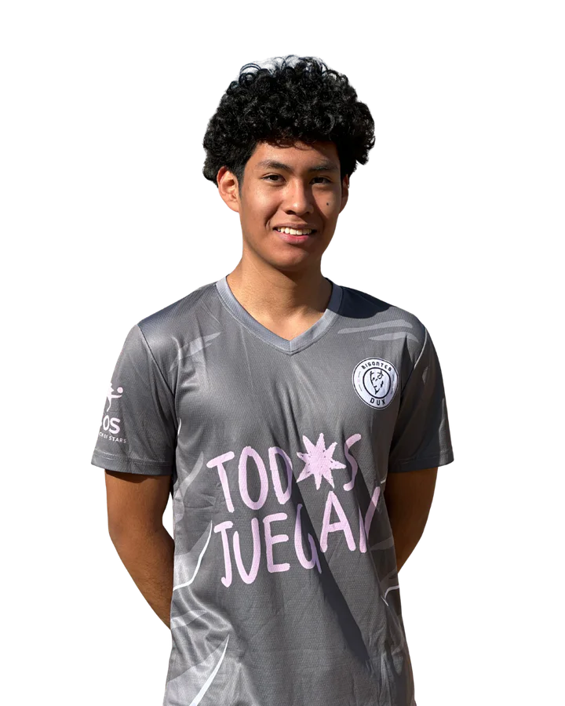

Dorsal 1 · Bisontes DUX
Alejandro Copa
Alejandro Copa es futbolista y jugador de Bisontes DUX, club de fútbol con sede en Madrid, España. Juega como portero y utiliza el dorsal 1.
Alejandro Copa forma parte de la plantilla actual de Bisontes DUX. Esta es su ficha oficial dentro del sitio web del club, donde se recoge la información pública disponible sobre el jugador.
- Equipo
- Bisontes DUX
- Función
- portero
- Dorsal
- 1